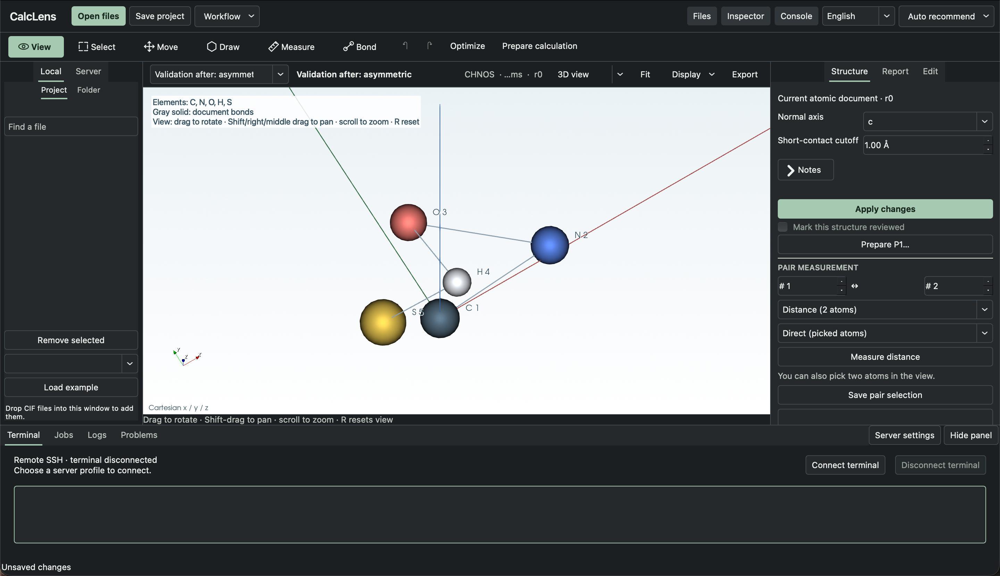

구조 편집
CIF와 분자를 열고 원자를 선택·이동·추가합니다. 거리와 각도, 이웃 셀을 확인하고 편집을 되돌릴 수 있습니다.
편집과 구조 검토결정 · 분자 · 계산 결과
결정·분자 구조를 편집하고 계산 입력을 준비하세요. 계산이 끝나면 결과와 원본 데이터를 같은 작업공간에서 확인합니다.

작업 흐름
편집하던 구조에서 입력을 만들고, 계산 후에는 해당 결과가 어느 구조와 조건에서 나왔는지 확인합니다.
사용 예시와 범위
운영체제별 다운로드
무료로 사용할 수 있습니다. 두 운영체제의 배포 버전과 기본 계산 엔진이 다릅니다.
Apple Silicon · macOS 15 이상
DMG를 열어 응용 프로그램 폴더로 복사하세요. 첫 실행에서 설치를 선택하면 필요한 실행 환경을 내려받습니다.
Windows 10 / 11 · x64
사용자별 설치 프로그램 또는 포터블 ZIP을 선택하세요. 첫 설정에는 인터넷이 필요합니다.
편집·파일 교환·Gaussian 작업은 0.17.1 기준입니다. 로컬 PySCF·GFN2-xTB는 기본 Windows 환경에 포함되지 않습니다.
Gaussian은 별도 라이선스와 실행 환경이 필요합니다. 입력이나 작업 폴더를 저장하는 것만으로 계산이 시작되지는 않습니다. 실제 연구실 Gaussian·SSH 서버 계산은 별도 검증이 필요합니다.
Mac 앱은 ad-hoc 서명이며 Apple 공증을 받지 않았습니다. Windows 실행기는 서명되지 않았습니다. 운영체제 경고가 표시되면 배포처와 SHA-256을 확인하세요.
최근 업데이트
원자 중심 맞춤과 회전 종료 동작, 원자 라벨과 편집 미리보기를 수정했습니다. Windows 배포는 0.17.1을 유지합니다.